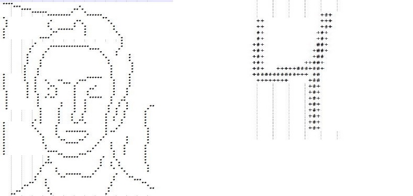
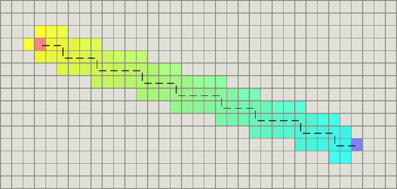

Linear Classifier
Class
Face & Digit Classifier
Project Members
Pritish Sahu
Serena De Stefani
Description
This project deals with classification of DIGITS and FACES. where we tackle two problems, the classification of 2D images of digits and the classification of 2D images of faces, where our faces are simplified sketches with the rough appearance of faces.
We carefully select list of features as feature can range from simple to complex, but complex ones might not necessarily give better results than simpler ones; also adding too many features may be counter productive, as the accuracy in the recognition task might decrease.
We implemented 3 classifiers and compared their results:
|
|
1. Perceptron
The perceptron algorithm assigns weights to all the different features, for all the possible labels. After reading one image, the perceptron assigns a score to each possible label for that images as:
score(f,y) = \sum_i f_iw_i^y
Then the perceptron finds the label with the highest score:
y^{'} = \argmax_{y^{''}} score(f,y^{''})
And it will adjust the weights accordingly, adding the value of the feature itself to the weights that identify the correct label:
w^y = w^y +f
And subtracting the value of the feature to the weights the identify a wrong label:
w^y^{'} = w^y^{'} - f
2. Naive Bayes Classifier
The Naive Bayes classifier uses probabilities instead of weights. It models a joint distribution over the label Y and the features. To classify an image, we look for the most probable label given the feature values for each pixel, using Bayes theorem:
P(y|f_{1},...,f_{m})= \argmax_{y} \Bigg\{log P(y) + \sum_{i=1}^m log P(f_i|y) \Bigg\}
First we will calculate the prior distribution over label digits, P(Y), estimating it directly from the training data:
\hat{P}(y) = \frac{c(y)}{n}
then we calculate the conditional probabilities of the features given each label:
$P(F_i|Y=y)$
\hat{P}(F_i=f_i|Y=y) = \frac{c(f_i,y)}{\sum_{{f_i}\in{0,1}}C(f_i,y)}
3. MIRA (Margin Infused Relaxed Algorithm)
It is very similar to the perceptron, as it calculates and assigns weights to features and then chooses the label with the highest score. The main difference with the perceptron is in the way the weights are updated, with a variable step size.
w^y = w^y + \tau f
w^y^{'} = w^y^{'} - \tau f
where tau is such that minimizes the following expression, while being capped by a positive constant C:
\tau = min \Bigg\{ C, \frac{(w^{y^{'}} - w^y) f +1}{2||f||_2^2} \Bigg\}
Source Code
Path Planning using A-Star
Class
Path Planning- AStar
Project Members
Pritish Sahu
Serena De Stefani
Description
Dijkstra’s Algorithm works well to find the shortest path, but it wastes time exploring in directions that aren’t promising. Greedy Best First Search explores in promising directions but it may not find the shortest path. The A* algorithm uses both the actual distance from the start and the estimated distance to the goal.
The cost at any state is given by heuristic:
f(s) := g(s) + h(s), which estimates the distance from the start state via state s to the goal state;
We have implemented 3 types of A-Star: 1. Repetitive Forward 2. Repetitive Backward 3. Repetitive Adaptive We have used manhattan distance to calculate cost between 2 states.
For better understanding read up on Adaptive A* in Koenig and Likhachev, Adaptive A* [Poster Abstract], Proceedings of the International Joint Conference on Autonomous Agents and Multiagent Systems (AAMAS), 1311-1312, 2005
f(s) := g(s) + h(s), which estimates the distance from the start state via state s to the goal state;
We have implemented 3 types of A-Star: 1. Repetitive Forward 2. Repetitive Backward 3. Repetitive Adaptive We have used manhattan distance to calculate cost between 2 states.
For better understanding read up on Adaptive A* in Koenig and Likhachev, Adaptive A* [Poster Abstract], Proceedings of the International Joint Conference on Autonomous Agents and Multiagent Systems (AAMAS), 1311-1312, 2005